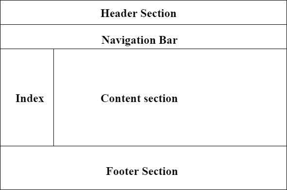

Conten Section
This is conten section page body
Tata letak halaman adalah bagian dari desain grafis yang berhubungan dengan pengaturan elemen visual pada sebuah halaman. Tata letak halaman digunakan untuk membuat halaman web terlihat lebih baik. Tata letak menetapkan tampilan keseluruhan, kepentingan relatif, dan hubungan antara elemen-elemen grafis untuk mencapai aliran informasi yang lancar dan pergerakan mata untuk efektivitas atau dampak maksimum.
This is conten section page body